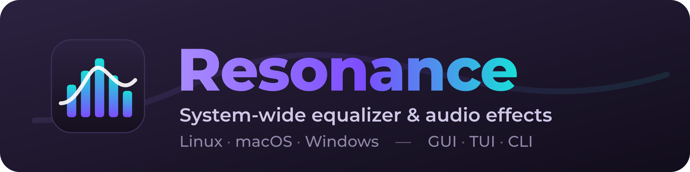
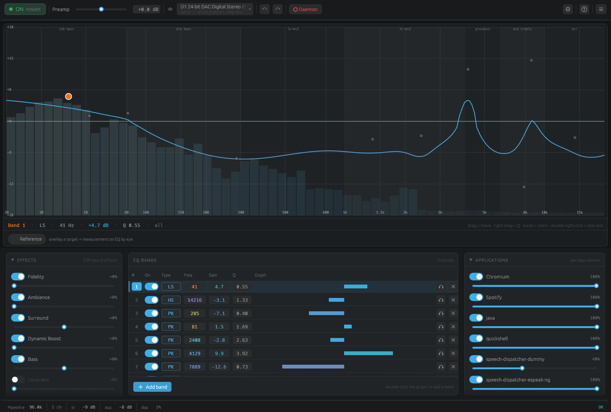
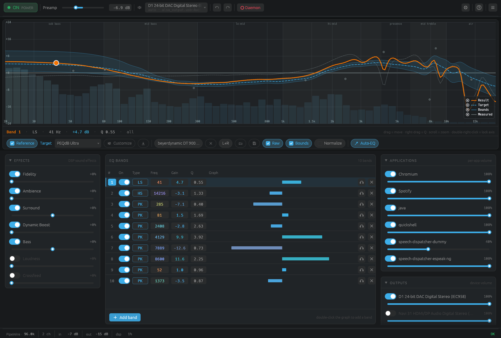
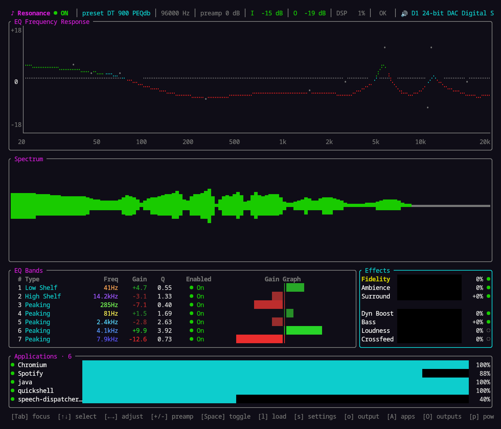
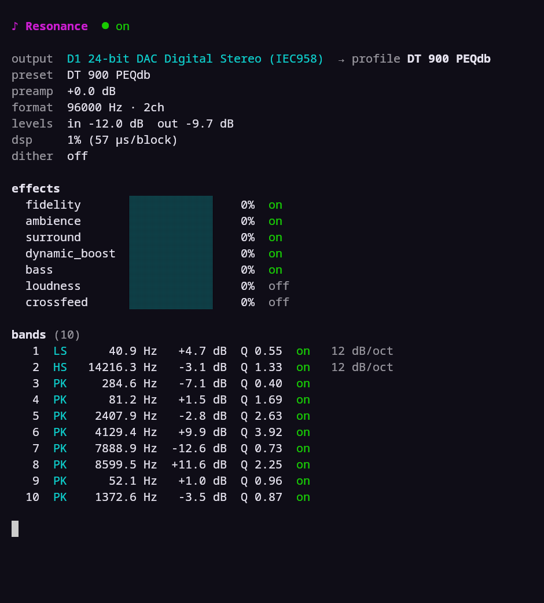
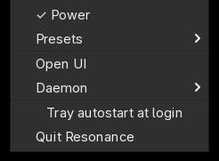
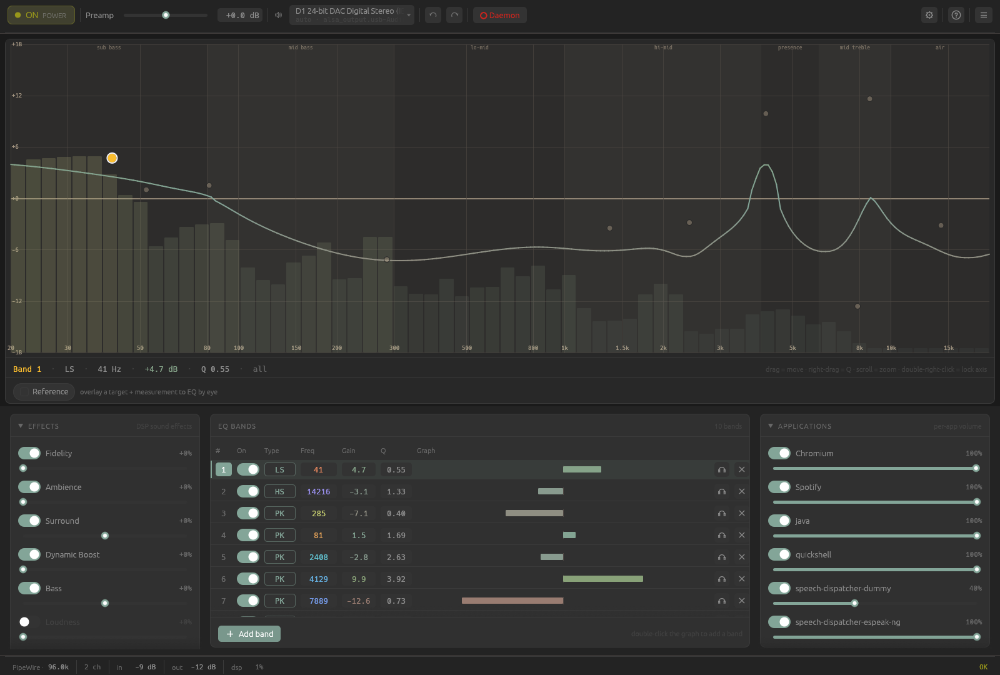
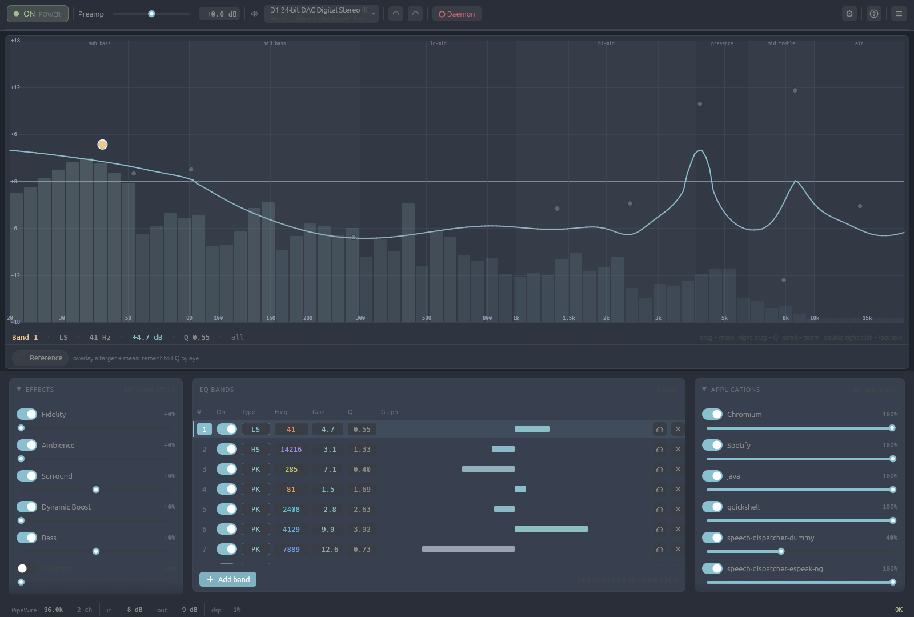
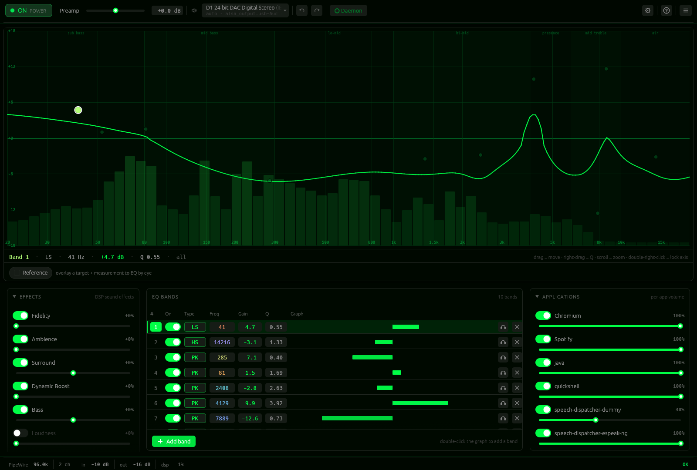
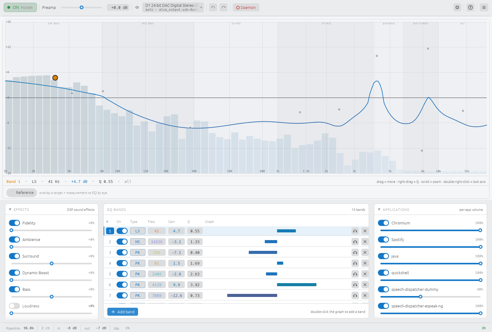

A system-wide equalizer for every OS.
Resonance routes your system audio through a high-precision DSP chain — a full parametric EQ plus FxSound-style effects — and plays it back. One daemon, three front-ends.
Linux · macOS · Windows — GUI · TUI · CLI

Precise, cross-platform, and built for preset interop — the tonal heavy lifting done right.
Unlimited bands, 14 biquad filter types, per-band slope (12/24/48 dB/oct) and Stereo/Mid/Side scope.
Fidelity, Ambience, Surround, Dynamic Boost and Bass — tuned to sound like FxSound.
Overlay a target and a real measurement, stay inside preference bounds, or one-click Auto-EQ. squig.link built in.
Dynamic EQ, linear-phase EQ, crossfeed, ISO 226 loudness, convolution/IR loader and dithering.
Independent volume/mute per application and per output sink, synced with the system mixer.
Per-channel EQ and an N×N routing matrix — not just stereo.
A desktop GUI, a terminal TUI, and a scriptable CLI — plus an optional system tray.
FxSound .fac,
EqualizerAPO .txt, REW imports, AutoEq downloads and .toml metadata.
The desktop GUI, the terminal UI, the CLI, and the tray — all driving the same daemon.




An optional standalone system tray toggles power, swaps presets, opens or quits a UI, and manages the daemon.
Several built-in themes, plus a matugen/pywal auto theme.




Native on every platform — no virtual cables, no kernel drivers.
curl -fsSL https://raw.githubusercontent.com/ealtun21/resonance/master/install.sh | bashPipeWire virtual sink. Handles immutable distros (SteamOS/Silverblue) and Arch
PKGBUILD. Details →
git clone https://github.com/ealtun21/resonance
cd resonance
contrib/macos/build-app.shmacOS 14.2+ Core Audio process tap — no BlackHole/kext. Details →
Download resonance-setup-x.y.z.exe
from the Releases page & run it.In-graph Audio Processing Object (APO). No virtual cable or driver. Details →